pistacho de Bronte 💚
La de la casa
Mortadela y pistacho
Pesto, mozzarella fior di latte, parmigiano, mortadela, stracciatella y pistachos.
Los pistachos del pesto y de encima son de Bronte, en Sicilia.
16,00 €
Encargar · 611 77 65 51Mar–dom desde las 19:00
Llamar 611 77 65 51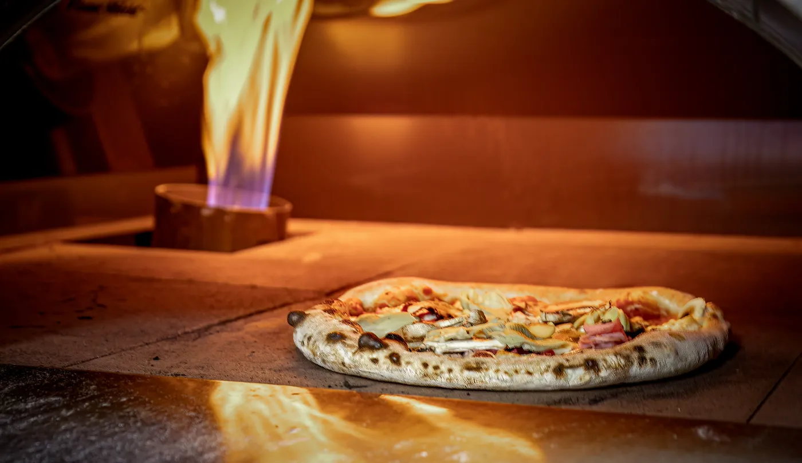
El horno
Abre a las 19:00
De martes a domingo
Pizza del Barrio · Saladar, Dénia
Masa estirada a mano, horno a 400–450 °C y su caja de cartón. Encárgala, pasa por el 67 y te la llevas a casa.
24 napolitanas, de 10,50 € a 16 €. Primero, las que más se piden.
pistacho de Bronte 💚
La de la casa
Pesto, mozzarella fior di latte, parmigiano, mortadela, stracciatella y pistachos.
Los pistachos del pesto y de encima son de Bronte, en Sicilia.
16,00 €
Encargar · 611 77 65 51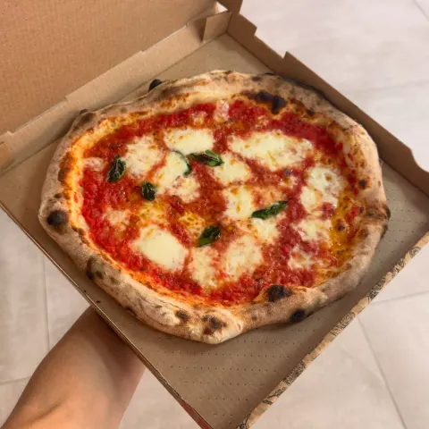
Tomate, mozzarella fior di latte D.O.P. y albahaca
La de siempre, en su caja.
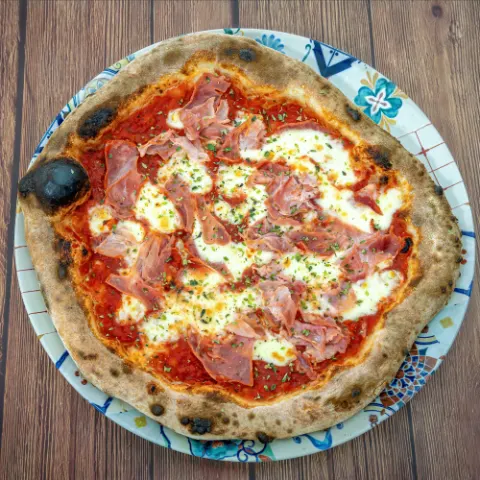
Tomate, mozzarella fior di latte D.O.P., jamón york y orégano
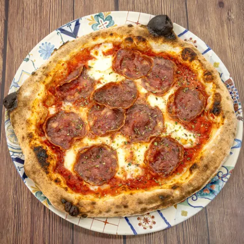
Tomate, mozzarella fior di latte D.O.P. y pepperoni
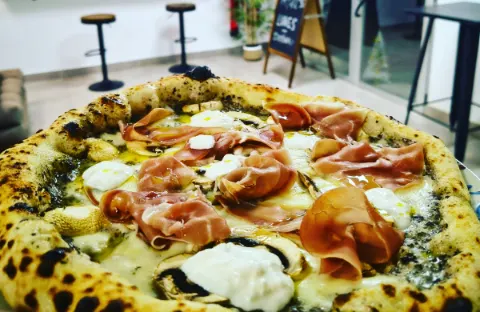
Fuera de Glovo
Masa napolitana, crema de trufa, mozzarella fior di latte, champiñones, jamón serrano, stracciatella y aceite de trufa.
La nombran 8 reseñas de Google.
No está en Glovo. Pregunta por ella al encargar.
Las opciones vegetarianas salen en 9 reseñas de Google.
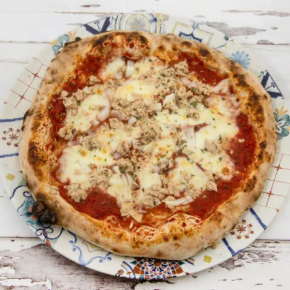
CalabriaTomate, mozzarella fior di latte, atún, cebolla blanca y pimienta negra 14,50 €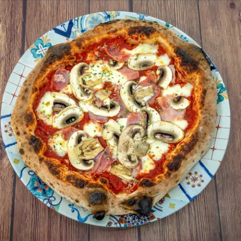
ReinaTomate, mozzarella fior di latte D.O.P., jamón york, champiñones, aceitunas y orégano 14,90 €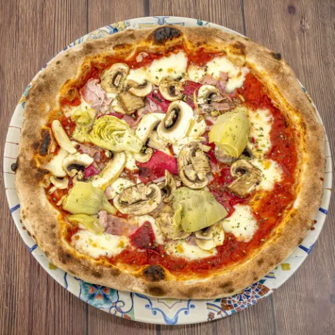
4 EstacionesTomate, mozzarella fior di latte D.O.P., jamón york, champiñones, aceitunas, alcachofas y orégano 15,00 €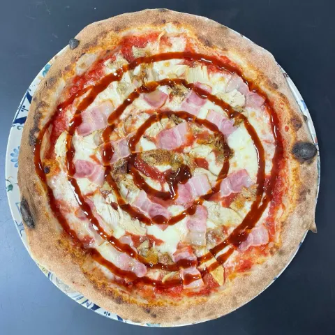
BarbacoaTomate, salsa barbacoa, mozzarella fior di latte D.O.P., carne picada y bacon 15,00 €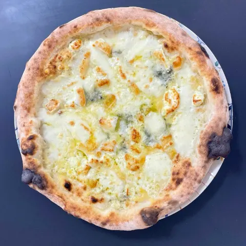
5 QuesosVeg.Mozzarella, cheddar, queso de cabra, roquefort, provolone y orégano 15,00 €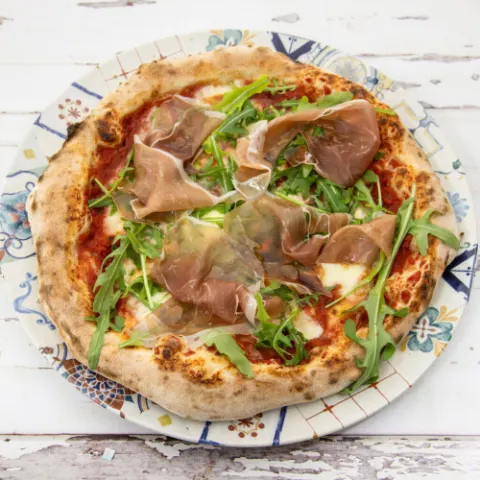
ItalianaPesto, mozzarella fior di latte, tomate cherry, jamón serrano, rúcula, tomate seco, parmesano y crema balsámica 15,00 €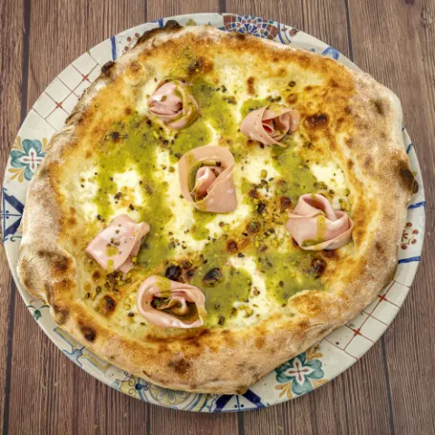
Mortadela y pistachoTopPesto, mozzarella fior di latte, parmigiano, mortadela, stracciatella y pistachos 16,00 €Precios e ingredientes de la carta publicada en Glovo (consultada el 2 de octubre de 2026). En el local pueden variar. Si tienes alergias o intolerancias, dilo al pedir.
1 La masa, a mano
2 Al horno
3 Y lo bueno, encima
Vídeo: @ivan.g.lpz para Pizza del Barrio. Los rótulos son suyos.
Para recoger
Llama o escribe, encarga y pasa a por ella al Passeig del Saladar, 67. Sin comisiones de por medio.
611 77 65 51Te la lleva un repartidor de Glovo. Mira en la app si llega a tu calle.
Pedir en Glovo (se abre en Glovo)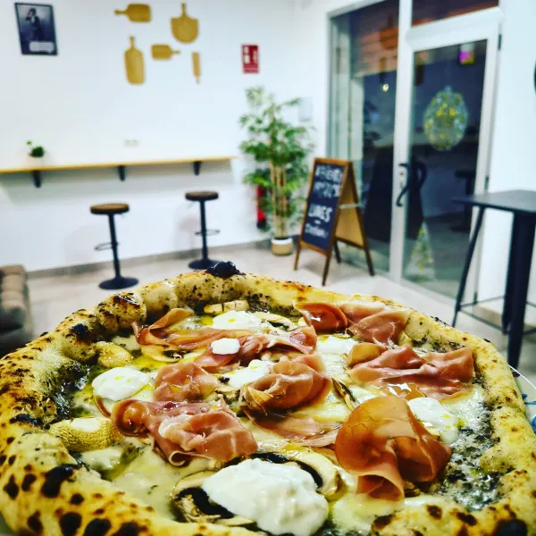
Hay barra y mesas dentro. Quienes cenan allí hablan de ambiente tranquilo y buena música. Si venís en grupo, mejor llamad antes.